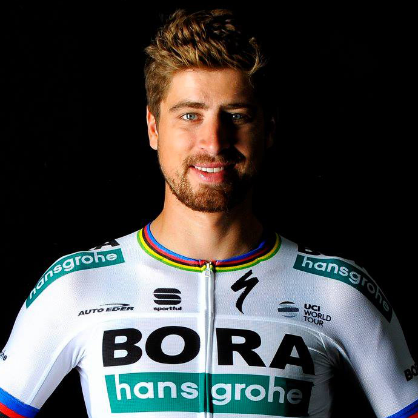
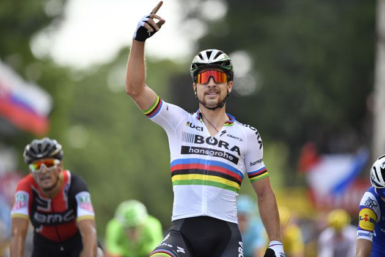

Peter Sagan (* 26. január 1990, Žilina) je slovenský profesionálny cestný cyklista jazdiaci za nemecký tím Bora-Hansgrohe. Podľa odborníkov patrí medzi najväčšie talenty svetovej cyklistiky v súčasnosti.Na Tour de France (2012 – 2016) sa stal jediným pretekárom, ktorý získal zelené tričko vo svojich prvých piatich účastiach.V roku 2013 a 2015 získal ocenenie Športovec roka.V roku 2015 získal titul majstra sveta v cestnej cyklistike – preteky s hromadným štartom mužov v kategórií elite, ktorý v roku 2016 obhájil v katarskej Dohe, ešte v roku 2016 pridal aj titul majstra Európy. A v roku 2017 v nórskom Bergene skompletizoval zlatý hetrik. Od roku 2014 má sídlo v Monaku.S médiami okrem slovenčiny komunikuje aj po anglicky a taliansky.
Osobné informácie
| Celé meno | Peter Sagan |
|---|---|
| Prezývka | Tourminator |
| Narodenie | 26.1.1990
Žilina, Slovensko |
| Výška | 184 cm |
| Váha | 73 kg |
| Tím | Bora Bora-Hansgrohe |
| Typ cyklistu | špurtér, bodovacia súťaž, klasické preteky |
Začiatky
Narodil sa v Žiline ako najmladší syn Ľubomíra Sagana a jeho manželky Heleny. Vyrastal spoločne s dvomi bratmi a sestrou v žilinskej štvrti Bôrik, kde mali jeho rodičia malý obchod s potravinami. Svoju detskú športovú kariéru začínal v žilinskom futbalovom klube, ale už po týždni zavesil kopačky na klinec a upol sa k bicyklu. Svoje prvé víťazstvo získal už v siedmich rokoch. V žilinskom lesoparku zorganizovali saleziáni a Cyklistický spolok Žilina cyklistické preteky a Peter aj jeho brat Juraj zvíťazili vo svojich vekových kategóriách. Bolo rozhodnuté, že Saganovci sa budú venovať cyklistike vážnejšie. Keď mal Peter deväť rokov, začal trénovať v Cyklistickom spolku v Žiline pod vedením trénerov Milana Novosada a Petra Zánického.
Juniorská kariéra
Peter Sagan sa spočiatku venoval horskej aj cestnej cyklistike, cez zimu dokonca aj cyklokrosu. Ako výnimočný talent zažiaril už v predjuniorskom veku. V roku 2006 šokoval cyklistických odborníkov, keď vyhral preteky Regiónem Orlicka, jedny z najťažších juniorských etapových pretekov v Česku. Neznámy Peter Sagan, vtedy iba šestnásťročný kadet, porazil v štvoretapových pretekoch všetkých o dva roky starších juniorov. Víťazstvo si ešte zopakoval aj v tretej etape pretekov nováčikov Asvö Radjugendtour v rakúskom Erlachu. Na majstrovstvách Slovenska juniorov v tom istom roku skončil tretí so o dva roky staršími Róbertom Gavendom a svojím bratom Jurajom.
Profesionálna kariéra
Rok 2009 bol prvým rokom pre Petra v seniorskej kategórii, no zároveň to pre neho znamenalo aj veľké rozhodovanie o ďalšom smerovaní. Hneď na začiatku roka roka 2009 sa však už vyjadril, že stále nie je definitívne rozhodnutý, či sa stane špecialistom na cestnú alebo na horskú cyklistiku. Preto aj v prvej sezóne medzi seniormi jazdil obe disciplíny. Úvod svojej prvej sezóny medzi seniormi Peter Sagan strávil v tréningovom kempe Liquigasu v Toskánsku, kde trénoval spoločne s profesionálnymi hviezdami, akými sú Roman Kreuziger, Ivan Basso, Daniele Benatti a Franco Pellizotti.
Ešte ako 19-ročný vstúpil do profesionálneho pelotónu v januári 2010 na úvodnom podujatí seriálu UCI ProTour najvyššej kategórie WT, pretekoch Tour Down Under v Austrálii. Ešte tesne predtým sa zviditeľnil na kritériu Cancer Council Helpline Classic v Adelaide, ktoré bolo generálkou na Tour Down Under. Skončil v ňom na 27. mieste, ale takmer dve tretiny pretekov jazdil vo vedúcej päťčlennej skupine spolu s dvoma bývalými víťazmi Tour de France Lance Armstrongom a Óscarom Pereirom Siom.
V sezóne 2012 pokračuje v tíme Liquigas-Cannondale a pri svojej premiére na Tour de France získal tri prvenstvá a zelené tričko pre víťaza bodovacej súťaže šprintérov.
Cyklistickú sezónu v roku 2013 Peter Sagan zahájil januárovými pretekmi v Argentíne na Tour de San Luis, kde obsadil 87. miesto v celkovej klasifikácii. Na Tour of Omán zaznamenal prvé etapové víťazstvá sezóny, keď zvíťazil v druhej aj tretej etape. Zelené tričko opäť získal aj na pretekoch USA Pro Challenge a Tour of Alberta. V Kanade sa zúčastnil ešte GP de Québec (10. miesto) a GP de Montréal, v ktorých finišoval ako prvý. Na majstrovstvách sveta v Taliansku napokon obsadil 6. miesto.
Sezónu 2014 odštartoval Peter Sagan na argentínskych pretekoch Tour de San Luis, kde obsadil 76. pozíciu. V súťaži o zelené tričko na Dubai Tour skončil druhý, pričom v celkovej klasifikácii obsadil 73. miesto.
Počas leta 2014 sa objavili informácie o Saganovom prestupe z tímu Cannondale. Dňa 5. augusta sa vyskytli neoficiálne informácie, že Sagan nakoniec prestúpi do tímu Tinkoff-Saxo kde nakoniec aj prestúpil. Záujem o Sagana mali mať aj tímy Astana a tím pretekára F1 Fernanda Alonsa.
Peter sa stal v roku 2015 súčasťou ruského tímu Tinkoff-Saxo pod vedením Olega Tinkova. Nastúpil v prvej časti sezóny na ôsmich pretekoch: Tour of Qatar, Tour of Oman, Tirreno-Adriatico, Milano – San Remo, E3 Harelbeke, Gent-Wevelgem,Tour des Flandres, Grand Prix de l'Escau, Paris - Roubaix, Amgen Tour of California, Tour de Suisse.
Veľkého víťazstva sa dočkal na MS 27. septembra 2015 v Richmonde, USA, kde sa stal majstrom sveta v pretekoch s hromadným štartom po sólovom úniku 2,6 km pred cieľom. Celé preteky bol nenápadný, ale nakoniec bol v správnej chvíli na správnom mieste. Saganov majstrovský titul je historickým úspechom pre slovenskú cyklistiku. Sezónu zakončil dvoma druhými miestami na Abu Dhabi Tour, kde si naposledy vo svojom živote obliekol biely dres.
V roku 2016 nastupuje Peťo už s dúhovým dresom v tíme Tinkoff. Pretože už má 26 rokov, tak už nemôže získať na žiadnych pretekoch biely dres. 3. apríla 2016 sa Peter Sagan sa stal víťazom jubilejného 100. ročníka belgickej klasiky Okolo Flámska. Triumfoval na 255 km dlhej trati z Brúg do Oudenaarde po samostatnom úniku pred Švajčiarom Fabienom Cancellarom a pripísal si na konto najväčší úspech v profikolotoči. Bola to prvá monumentálna klasika, ktorá sa mu v jeho kariére podarila vyhrať. Zároveň si tak upevnil vedúce postavenie v oboch cyklistických rebríčkoch (svetovom aj Word Tour).
Umiestnenie na Grand Tour
| Grand Tour | 2011 | 2012 | 2013 | 2014 | 2015 | 2016 | 2017 | 2018 |
|---|---|---|---|---|---|---|---|---|
| Giro | - | - | - | - | - | - | - | - |
| Tour | - | 42 | 82 | 60 | 46 | 95 | dsf | 71 |
| Vuelta | 121 | - | - | np | np | - | - | - |